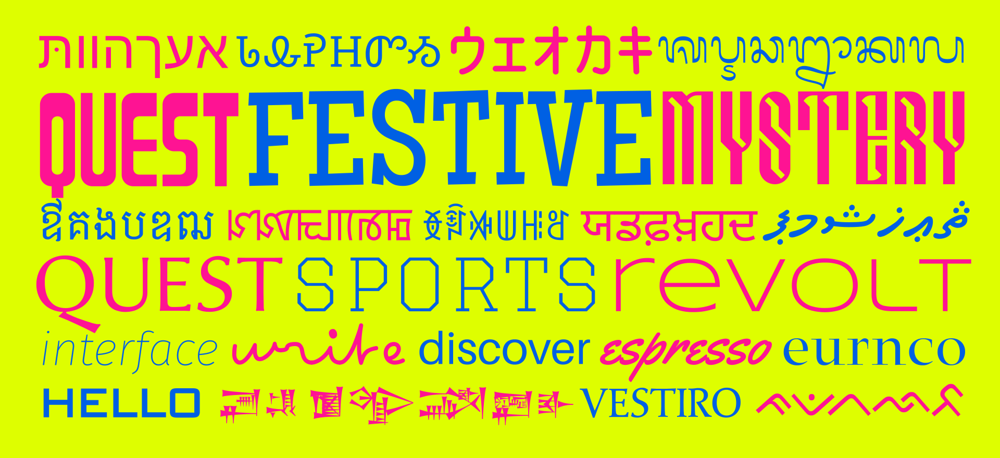

GetGo Fonts for FontLab¶
Scratching your head to start a font? FontLab 8 gives you a head start. With 99 free template fonts, we’re guiding you from the get-go! GetGo Fonts for FontLab is a carefully curated collection of quality typeface designs available in FontLab’s native VFJ format.

The 99 free designs range from simple Latin sanserif and serif designs, include display and script fonts, and boast several massive multi-axis variable font projects.
But that’s not all! The Zoto fonts (based on the Noto global font collection) give you ready-to-use templates for over 70 writing systems (scripts) from around the world (Cyrillic, Greek, Arabic, emoji, and many others). Those fonts include the right glyph sets and OpenType features. The GetGo collection even bundles a few single-stroke (skeleton) fonts, on which you can experiment with FontLab’s live calligraphic Power Brush.
You may create your own fonts based on these fonts, and you may incorporate portions of these fonts into your own fonts. Each GetGo font is available under one of three licenses: CC-0 (public domain), Apache or OFL. You can download them in the FontLab VFJ format and open them in FontLab 8. The collection is growing!
Download¶
Licenses¶
CC-0¶
If the font is licensed under the CC0 1.0 Universal Public Domain Dedication, it’s dedicated to the public domain. The person who associated a work with this deed has dedicated the work to the public domain by waiving all of his or her rights to the work worldwide under copyright law, including all related and neighboring rights, to the extent allowed by law. You can copy, modify, distribute and perform the work, even for commercial purposes, all without asking permission.
You may create your own fonts based on this font, and you may incorporate portions of this font into your own font. You may publish your own font under any license, including a commercial license, without any limitations.
Apache¶
If the font is licensed under the Apache License v2.0:
You may create your own fonts based on this font, and you may incorporate portions of this font into your own font. You may publish your own font under any license, including a commercial license, but you must:
- in Font Info › Legal › Copyright, include
Portions Copyright (put the year and the original copyright owner here). - in Font Info › Legal › License, include
Portions licensed under the Apache License v2.0.
OFL¶
If the font is licensed under the SIL Open Font License, Version 1.1:
You may create your own fonts based on this font, and you may incorporate portions of this font into your own font, but you must publish the resulting font under the same license (SIL Open Font License, Version 1.1):
- in Font Info › Legal › Copyright, include
Portions Copyright (put the year and the original copyright owner here). - in Font Info › Legal › License, put
Licensed under the SIL Open Font License, Version 1.1. - see the license for more details
Fonts¶
GG Baar¶
license: CC-0 | Modular narrow display font | glyphs: 98 | scripts: Latin | Read more…
GG Boto¶
license: Apache | Grotesque sanserif design with the width, weight and italic axis | glyphs: 3387 | scripts: Latin, Cyrillic, Greek | Read more…
GG Cafe¶
license: Apache | Signpainter-style flat brush script font | glyphs: 372 | scripts: Latin, Greek | Read more…
GG Club OFL¶
license: OFL | Variable font with 12 axes in college block style | glyphs: 563 | scripts: Latin, Greek | Read more…
GG Cosm Italic¶
license: CC-0 | Neo-grotesque sanserif font family with a weight axis, italic version | glyphs: 340 | scripts: Latin | Read more…
GG Cosm¶
license: CC-0 | Neo-grotesque sanserif font family with a weight axis, upright version | glyphs: 359 | scripts: Latin | Read more…
GG Deco¶
license: CC-0 | Geometric art deco sanserif font | glyphs: 104 | scripts: Latin | Read more…
GG Fest¶
license: Apache | Festive slab serif font inspired by 1950s hand lettering | glyphs: 369 | scripts: Latin | Read more…
GG Hint¶
license: Apache | Unicase sanserif design with pixel-perfect manual TrueType Hinting (TTH) | glyphs: 372 | scripts: Latin, Greek | Read more…
GG Medi¶
license: CC-0 | Didone serif font | glyphs: 103 | scripts: Latin | Read more…
GG Ocra¶
license: CC-0 | Simple OCR-A (Latin) and OCR-BK (Japanese) font | glyphs: 177 | scripts: Latin, Katakana | Read more…
GG Pixa¶
license: CC-0 | Quirky pixel font with 14 pixels tall letters, for 28 writing systems | glyphs: 14769 | scripts: Han, Hangul, Latin, Canadian Aboriginal, Greek, Cyrillic, Arabic, Katakana, Myanmar, Coptic, Devanagari, Cherokee, Armenian, Hiragana, Hebrew, Runic, Bengali, Syriac, Thai, Braille, Tamil, Tifinagh, Nko, Thaana, Tibetan, Ogham, Bopomofo, Malayalam | Read more…
GG Plum¶
license: CC-0 | Humanist sanserif font family with a weight axis | glyphs: 205 | scripts: Latin | Read more…
GG Ptit OFL¶
license: OFL | Multi-script handwritten font that uses single stroke | glyphs: 4760 | scripts: Latin, Greek, Cyrillic, Katakana, Cherokee | Read more…
GG Rafi OFL Italic¶
license: OFL | Legible sanserif for UIs and signage with a weight axis, italic version | glyphs: 854 | scripts: Latin, Greek | Read more…
GG Rafi OFL¶
license: OFL | Legible sanserif for UIs and signage with a weight axis, italic version | glyphs: 855 | scripts: Latin, Greek | Read more…
GG Scig OFL Regular¶
license: OFL | Rectangular sanserif design with weight, width, slant and contrast axes | glyphs: 1218 | scripts: Latin, Cyrillic | Read more…
GG Star¶
license: CC-0 | Narrow retro sci-fi display font | glyphs: 144 | scripts: Cyrillic, Latin | Read more…
GG Stroke Chan OFL Italic¶
license: OFL | Single-stroke italic design in chancery style, for use with Power Brush or Stroke | glyphs: 106 | scripts: Latin | Read more…
GG Stroke Grot OFL¶
license: OFL | Single-stroke grotesque sanserif design, for use with Power Brush or Stroke | glyphs: 132 | scripts: Latin | Read more…
GG Veni¶
license: CC-0 | Renaissance serif font | glyphs: 199 | scripts: Latin | Read more…
GG Vize¶
license: CC-0 | Renaissance humanist sanserif font | glyphs: 103 | scripts: Latin | Read more…
Zoto Emoji¶
license: Apache | Reference font for Emoji symbols | glyphs: 771 | scripts: | Read more…
Zoto Kufi Arabic¶
license: Apache | Reference font for the Arabic script in the Kufi style | glyphs: 762 | scripts: Arabic | Read more…
Zoto Sans Armenian¶
license: Apache | Reference sans font for the Armenian script | glyphs: 98 | scripts: Armenian | Read more…
Zoto Sans Avestan¶
license: Apache | Reference sans font for the Avestan script | glyphs: 73 | scripts: Avestan | Read more…
Zoto Sans Balinese¶
license: Apache | Reference sans font for the Balinese script | glyphs: 182 | scripts: Balinese | Read more…
Zoto Sans Bamum¶
license: Apache | Reference sans font for the Bamum script | glyphs: 661 | scripts: Bamum | Read more…
Zoto Sans Batak¶
license: Apache | Reference sans font for the Batak script | glyphs: 61 | scripts: Batak | Read more…
Zoto Sans Brahmi¶
license: Apache | Reference sans font for the Brahmi script | glyphs: 182 | scripts: Brahmi | Read more…
Zoto Sans Buginese¶
license: Apache | Reference sans font for the Buginese script | glyphs: 63 | scripts: Buginese | Read more…
Zoto Sans Buhid¶
license: Apache | Reference sans font for the Buhid script | glyphs: 39 | scripts: Buhid | Read more…
Zoto Sans Canadian Aboriginal¶
license: Apache | Reference sans font for the Canadian Aboriginal syllabics | glyphs: 744 | scripts: Canadian Aboriginal, Latin | Read more…
Zoto Sans Carian¶
license: Apache | Reference sans font for the Carian script | glyphs: 53 | scripts: Carian | Read more…
Zoto Sans Cham¶
license: Apache | Reference sans font for the Cham script | glyphs: 127 | scripts: Cham | Read more…
Zoto Sans Cherokee¶
license: Apache | Reference sans font for the Cherokee script | glyphs: 89 | scripts: Cherokee | Read more…
Zoto Sans Coptic¶
license: Apache | Reference sans font for the Coptic script | glyphs: 190 | scripts: Coptic, Latin | Read more…
Zoto Sans Cuneiform¶
license: Apache | Reference sans font for the Cuneiform script | glyphs: 986 | scripts: Cuneiform | Read more…
Zoto Sans Cypriot¶
license: Apache | Reference sans font for the Cypriot script | glyphs: 59 | scripts: Cypriot | Read more…
Zoto Sans Deseret¶
license: Apache | Reference sans font for the Deseret script | glyphs: 84 | scripts: Deseret | Read more…
Zoto Sans Egyptian Hieroglyphs¶
license: Apache | Reference sans font for the Egyptian Hieroglyphs script | glyphs: 1075 | scripts: Egyptian Hieroglyphs | Read more…
Zoto Sans Ethiopic¶
license: Apache | Reference sans font for the Ethiopic script | glyphs: 559 | scripts: Ethiopic | Read more…
Zoto Sans Georgian¶
license: Apache | Reference sans font for the Georgian script | glyphs: 127 | scripts: Georgian, Armenian | Read more…
Zoto Sans Glagolitic¶
license: Apache | Reference sans font for the Glagolitic script | glyphs: 98 | scripts: Glagolitic | Read more…
Zoto Sans Gothic¶
license: Apache | Reference sans font for the Gothic script | glyphs: 43 | scripts: Gothic | Read more…
Zoto Sans Gurmukhi¶
license: Apache | Reference sans font for the Gurmukhi script | glyphs: 301 | scripts: Gurmukhi | Read more…
Zoto Sans Hanunoo¶
license: Apache | Reference sans font for the Hanunoo script | glyphs: 43 | scripts: Hanunoo | Read more…
Zoto Sans Hebrew¶
license: Apache | Reference sans font for the Hebrew script | glyphs: 155 | scripts: Hebrew | Read more…
Zoto Sans Historic¶
license: Apache | Reference sans font for several historic scripts | glyphs: 3638 | scripts: Egyptian Hieroglyphs, Cuneiform, Linear B, Latin, Old Turkic, Samaritan, Avestan, Phags Pa, Carian, Old Persian, Ugaritic, Osmanya, Old South Arabian, Mandaic, Lycian, Lydian, Imperial Aramaic, Phoenician, Inscriptional Parthian, Inscriptional Pahlavi | Read more…
Zoto Sans Imperial Aramaic¶
license: Apache | Reference sans font for the Imperial Aramaic script | glyphs: 35 | scripts: Imperial Aramaic | Read more…
Zoto Sans Inscriptional Pahlavi¶
license: Apache | Reference sans font for the Inscriptional Pahlavi script | glyphs: 34 | scripts: Inscriptional Pahlavi | Read more…
Zoto Sans Inscriptional Parthian¶
license: Apache | Reference sans font for the Inscriptional Parthian script | glyphs: 45 | scripts: Inscriptional Parthian | Read more…
Zoto Sans Javanese¶
license: Apache | Reference sans font for the Javanese script | glyphs: 155 | scripts: Javanese | Read more…
Zoto Sans Kayah Li¶
license: Apache | Reference sans font for the Kayah Li script | glyphs: 54 | scripts: Kayah Li | Read more…
Zoto Sans Kharoshthi¶
license: Apache | Reference sans font for the Kharoshthi script | glyphs: 133 | scripts: Kharoshthi | Read more…
Zoto Sans Khmer¶
license: Apache | Reference sans font for the Khmer script | glyphs: 265 | scripts: Khmer | Read more…
Zoto Sans Lao¶
license: Apache | Reference sans font for the Lao script | glyphs: 166 | scripts: Lao | Read more…
Zoto Sans Limbu¶
license: Apache | Reference sans font for the Limbu script | glyphs: 73 | scripts: Limbu | Read more…
Zoto Sans Linear B¶
license: Apache | Reference sans font for the Linear B script | glyphs: 272 | scripts: Linear B | Read more…
Zoto Sans Lisu¶
license: Apache | Reference sans font for the Lisu script | glyphs: 54 | scripts: Lisu | Read more…
Zoto Sans Lycian¶
license: Apache | Reference sans font for the Lycian script | glyphs: 33 | scripts: Lycian | Read more…
Zoto Sans Lydian¶
license: Apache | Reference sans font for the Lydian script | glyphs: 31 | scripts: Lydian | Read more…
Zoto Sans Mandaic¶
license: Apache | Reference sans font for the Mandaic script | glyphs: 128 | scripts: Mandaic | Read more…
Zoto Sans Meetei Mayek¶
license: Apache | Reference sans font for the Meetei Mayek script | glyphs: 91 | scripts: Meetei Mayek | Read more…
Zoto Sans Mongolian¶
license: Apache | Reference sans font for the Mongolian script | glyphs: 1511 | scripts: Mongolian | Read more…
Zoto Sans New Tai Lue¶
license: Apache | Reference sans font for the New Tai Lue script | glyphs: 91 | scripts: New Tai Lue | Read more…
Zoto Sans NKo¶
license: Apache | Reference sans font for the Nko script | glyphs: 174 | scripts: Nko, Arabic | Read more…
Zoto Sans Ogham¶
license: Apache | Reference sans font for the Ogham script | glyphs: 33 | scripts: Ogham | Read more…
Zoto Sans Ol Chiki¶
license: Apache | Reference sans font for the Ol Chiki script | glyphs: 52 | scripts: Ol Chiki | Read more…
Zoto Sans Old Italic¶
license: Apache | Reference sans font for the Old Italic script | glyphs: 39 | scripts: Old Italic | Read more…
Zoto Sans Old Persian¶
license: Apache | Reference sans font for the Old Persian script | glyphs: 54 | scripts: Old Persian | Read more…
Zoto Sans Old South Arabian¶
license: Apache | Reference sans font for the Old South Arabian script | glyphs: 36 | scripts: Old South Arabian | Read more…
Zoto Sans Old Turkic¶
license: Apache | Reference sans font for the Old Turkic script | glyphs: 77 | scripts: Old Turkic | Read more…
Zoto Sans Osmanya¶
license: Apache | Reference sans font for the Osmanya script | glyphs: 44 | scripts: Osmanya | Read more…
Zoto Sans Phags Pa¶
license: Apache | Reference sans font for the Phags-pa script | glyphs: 382 | scripts: Phags Pa, Mongolian | Read more…
Zoto Sans Phoenician¶
license: Apache | Reference sans font for the Phoenician script | glyphs: 33 | scripts: Phoenician | Read more…
Zoto Sans Rejang¶
license: Apache | Reference sans font for the Rejang script | glyphs: 41 | scripts: Rejang | Read more…
Zoto Sans Runic¶
license: Apache | Reference sans font for the Runic script | glyphs: 85 | scripts: Runic | Read more…
Zoto Sans Samaritan¶
license: Apache | Reference sans font for the Samaritan script | glyphs: 67 | scripts: Samaritan | Read more…
Zoto Sans Saurashtra¶
license: Apache | Reference sans font for the Saurasthra script | glyphs: 93 | scripts: Saurashtra | Read more…
Zoto Sans Shavian¶
license: Apache | Reference sans font for the Shavian script | glyphs: 52 | scripts: Shavian | Read more…
Zoto Sans Sundanese¶
license: Apache | Reference sans font for the Sundanese script | glyphs: 79 | scripts: Sundanese | Read more…
Zoto Sans Syloti Nagri¶
license: Apache | Reference sans font for the Syloti Nagri script | glyphs: 85 | scripts: Syloti Nagri | Read more…
Zoto Sans Symbols¶
license: Apache | Reference symbol font | glyphs: 5126 | scripts: Braille, Greek | Read more…
Zoto Sans Tagalog¶
license: Apache | Reference sans font for the Tagalog script | glyphs: 26 | scripts: Tagalog | Read more…
Zoto Sans Tagbanwa¶
license: Apache | Reference sans font for the Tagbanwa script | glyphs: 24 | scripts: Tagbanwa | Read more…
Zoto Sans Tai Le¶
license: Apache | Reference sans font for the Tai Le script | glyphs: 55 | scripts: Tai Le | Read more…
Zoto Sans Tai Tham¶
license: Apache | Reference sans font for the Tai Tham script | glyphs: 231 | scripts: Tai Tham | Read more…
Zoto Sans Tai Viet¶
license: Apache | Reference sans font for the Tai Viet script | glyphs: 81 | scripts: Tai Viet, Latin | Read more…
Zoto Sans Tamil¶
license: Apache | Reference sans font for the Tamil script | glyphs: 215 | scripts: Tamil | Read more…
Zoto Sans Thaana¶
license: Apache | Reference sans font for the Thaana script | glyphs: 95 | scripts: Thaana, Arabic | Read more…
Zoto Sans Tifinagh¶
license: Apache | Reference sans font for the Tifinagh script | glyphs: 101 | scripts: Tifinagh | Read more…
Zoto Sans Ugaritic¶
license: Apache | Reference sans font for the Ugaritic script | glyphs: 35 | scripts: Ugaritic | Read more…
Zoto Sans Vai¶
license: Apache | Reference sans font for the Vai script | glyphs: 304 | scripts: Vai | Read more…
Zoto Sans Yi¶
license: Apache | Reference sans font for the Yi script | glyphs: 1251 | scripts: Yi | Read more…
Zoto Serif Armenian¶
license: Apache | Reference serif font for the Armenian script | glyphs: 98 | scripts: Armenian | Read more…
Zoto Serif Georgian¶
license: Apache | Reference serif font for the Georgian script | glyphs: 127 | scripts: Georgian, Armenian | Read more…
Zoto Serif Khmer¶
license: Apache | Reference serif font for the Khmer script | glyphs: 378 | scripts: Khmer | Read more…
Zoto Serif Lao¶
license: Apache | Reference serif font for the Lao script | glyphs: 166 | scripts: Lao | Read more…